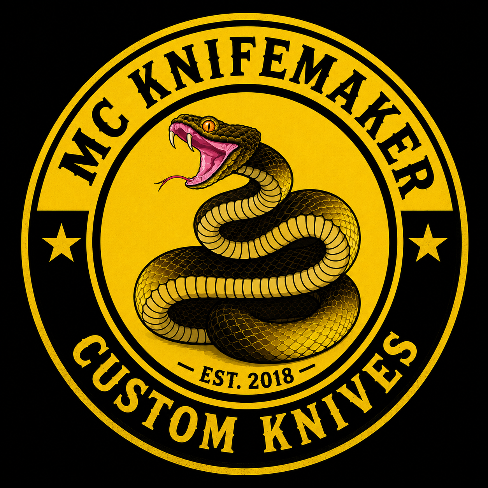
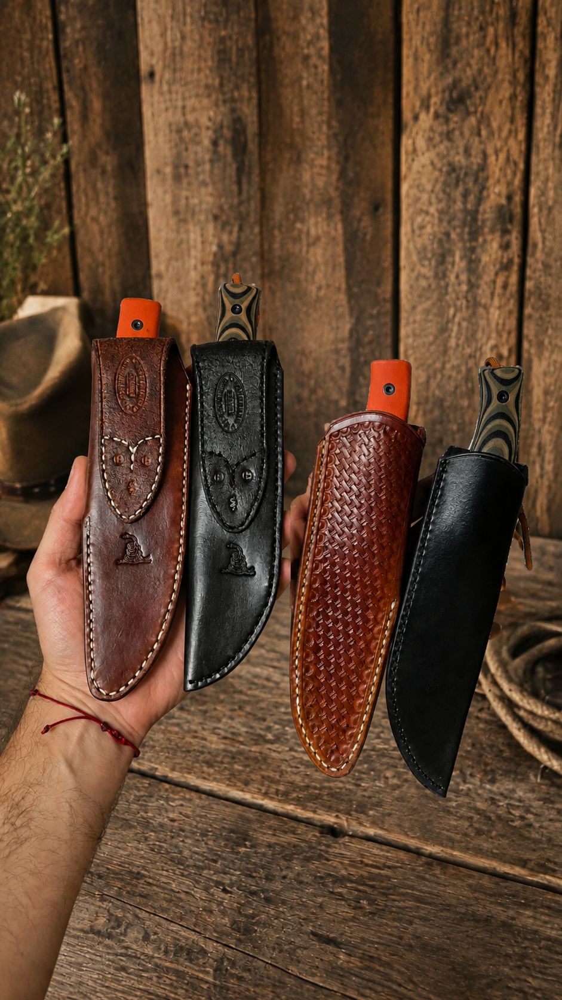
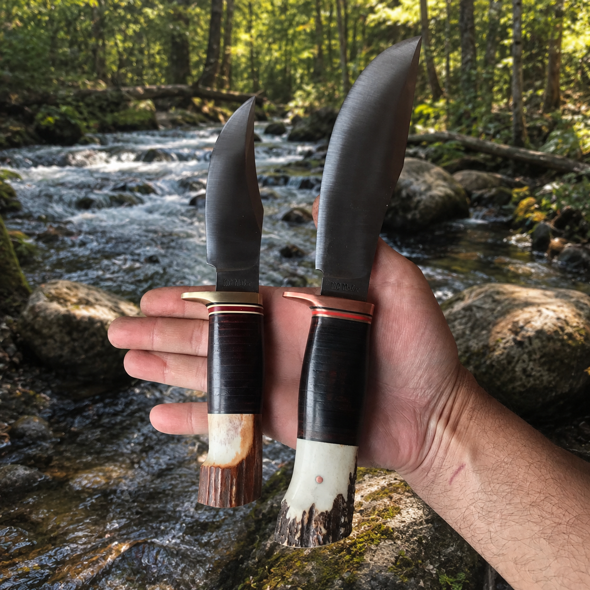
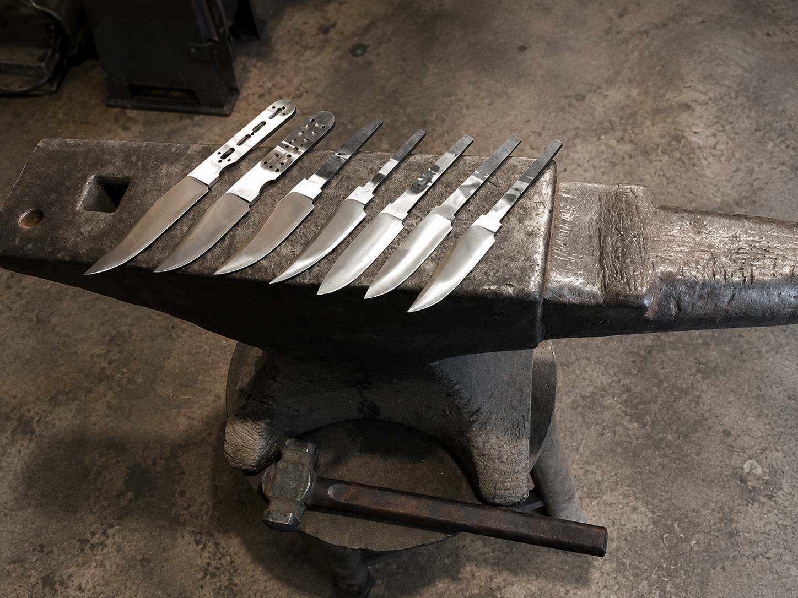

Frontier Period
Rugged historical forms, natural materials and hand-finished character.

MC KNIFEMAKEREST. 2018 · ARGENTINA
Knifemaker & Leathersmith
Traditional craftsmanship. Individual character. Handmade custom knives for hunting, camping, the outdoors and collectors.
THE MAKER
Every knife and sheath is crafted, ground, heat treated and hand finished in the shop.
KNIFE STYLES
Classic designs with a strong connection to the history of outdoor knives.
Rugged historical forms, natural materials and hand-finished character.

Inspired by the honest proportions and natural materials of William Scagel.

Bowies, Marbles, Randall-inspired and other timeless working patterns.

Practical handmade pieces for everyday carry, camp and the field.
SELECTED WORK
Traditional designs, natural materials and a strong connection to the outdoors.
ABOUT THE MAKER
MC Knifemaker was established in 2018. My work focuses on traditional knife patterns, natural materials and the character that comes from making each piece by hand.
I am an active member of the American Bladesmith Society, with an Apprentice classification.
INFLUENCES
Randall Made Knives · William Scagel · Marbles Knives · Harry Morseth · Ruana Knives · Bill Bagwell · Daniel Winkler · John Cohea · Chuck Burrows
SHOP
Accessories and MC Knifemaker gear, alongside custom knife commissions.
IN THE FIELD
Knives belong outdoors — at camp, on the trail and wherever honest work takes them.
KNIFE CARE & STORAGE
Handmade knives are made to be used, but they also deserve proper care.
Wipe the blade clean and dry it thoroughly after use.
For carbon steels, use a light coat of suitable protective oil before storage.
Natural materials should not be soaked or exposed to prolonged heat or humidity.
Keep leather dry and let it dry naturally if it becomes wet.
Keep the knife in a dry, ventilated place for long-term storage.
A knife is a cutting tool. Avoid prying, twisting and striking hard objects.
FROM THE WORKSHOP
CUSTOM ORDERS
Contact MC Knifemaker to discuss a custom knife or sheath.